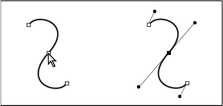
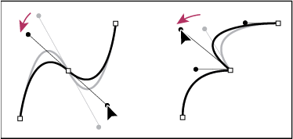
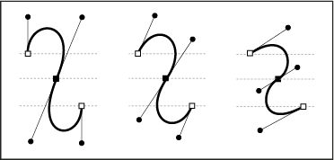

About direction lines and direction points
When you select an anchor point that connects curved segments (or select the segment itself), the anchor points of the connecting segments display direction handles, which consist of direction lines that end in direction point. The angle and length of the direction lines determine the shape and size of the curved segments. Moving the direction points reshapes the curves. Direction lines don’t appear in the final output.

A smooth point always has two direction lines, which move together as a single, straight unit. When you move a direction line on a smooth point, the curved segments on both sides of the point are adjusted simultaneously, maintaining a continuous curve at that anchor point.
In comparison, a corner point can have two, one, or no direction lines, depending on whether it joins two, one, or no curved segments, respectively. Corner point direction lines maintain the corner by using different angles. When you move a direction line on a corner point, only the curve on the same side of the point as that direction line is adjusted.

Direction lines are always tangent to (perpendicular to the radius of) the curve at the anchor points. The angle of each direction line determines the slope of the curve, and the length of each direction line determines the height, or depth, of the curve.
